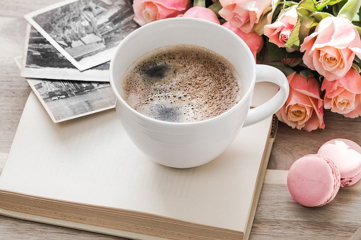

1 / 3
This blog was created in dedication to my great-grandmother Mary Hall. Born in the
west of Ireland in 1852 she married young and had a wealth of children.
2 / 3

Her avid skill for baking was documented in her brown leather notebook, containing
an assortment of recipes. Mary's work was preserved through the generations and eventually made
it's way into my hands. I enjoyed baking her recipes but it wasn't enough. I knew I had to
honour my lineage and share these ancient food traditions with the world.
3 / 3
Family recipes bridge the generations together, connecting us to our ancestors. In
the words of novelist Laurie Colwin, 'No one who cooks, cooks alone. A cook in the kitchen is
surrounded by generations of cooks past'.